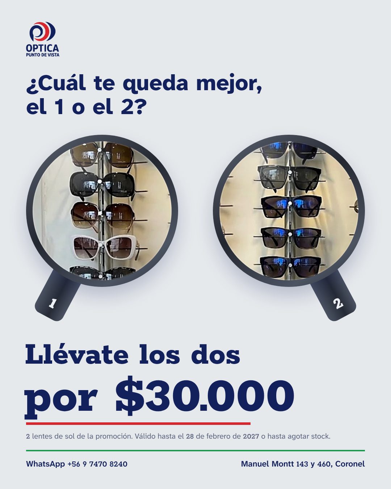
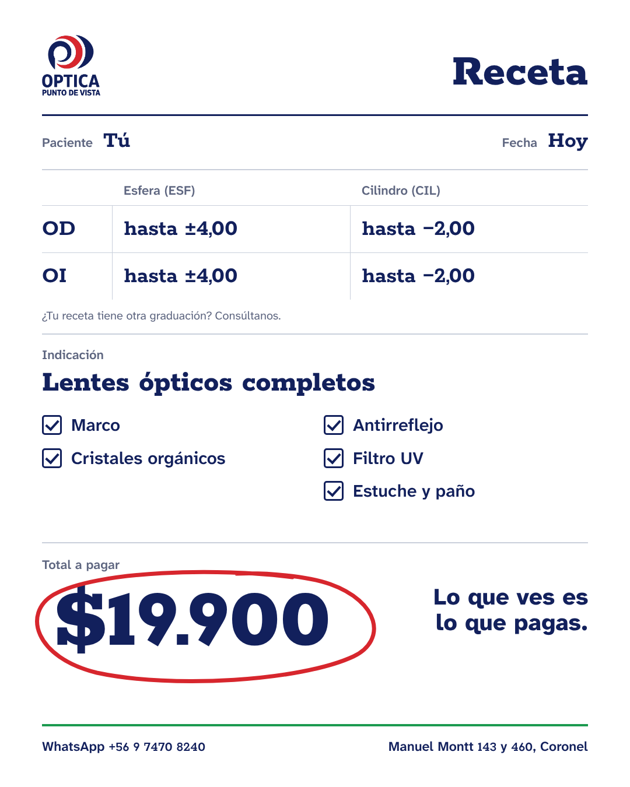
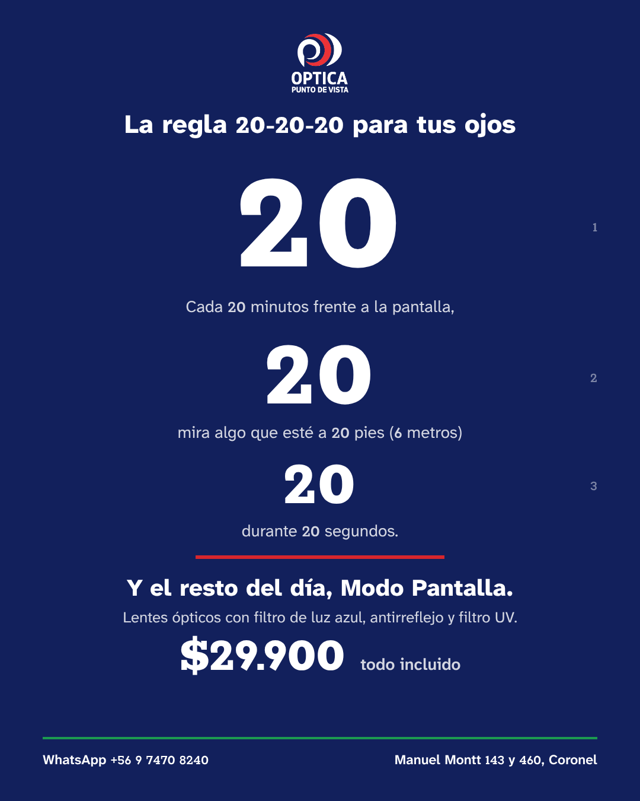
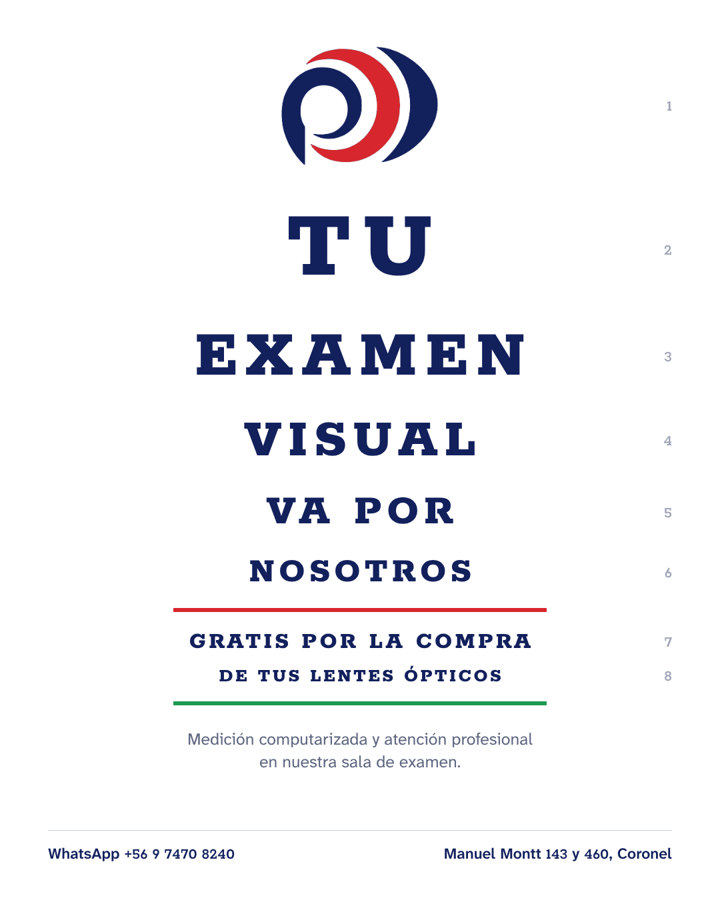
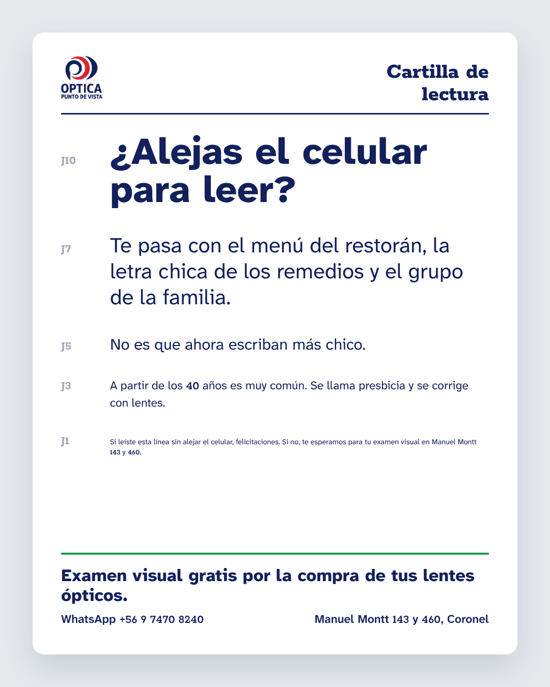
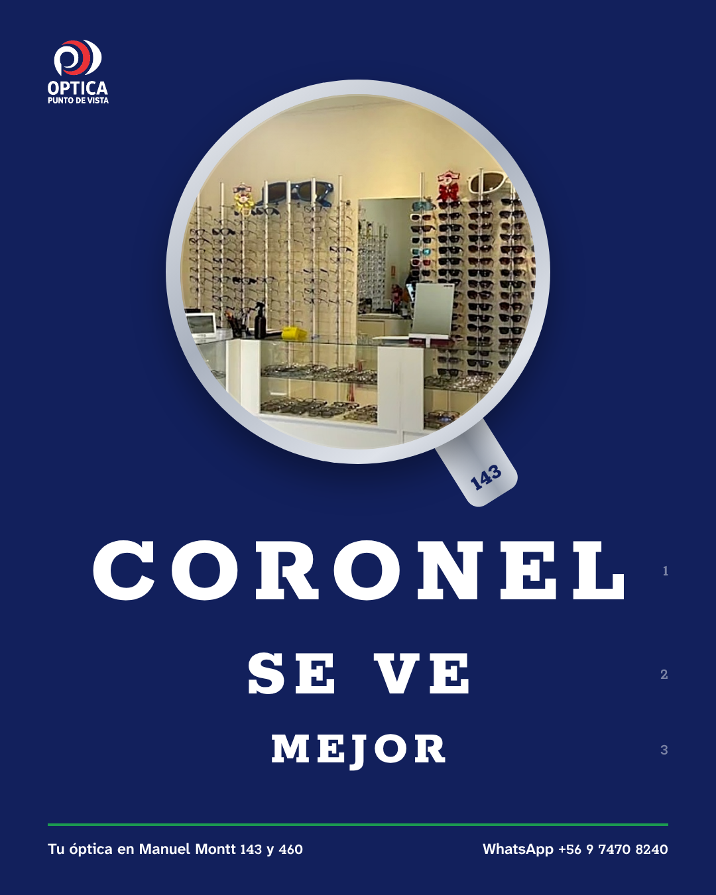

Posts de Instagram
Todo sale del examen de la vista: la cartilla, la receta, la ficha y los lentes de prueba. Formato 1080 × 1350.

Dúo de SolLa pregunta del examen, «¿el 1 o el 2?», con la oferta: llévate los dos.

Precio CerradoUna receta con la graduación incluida y el total encerrado en rojo.

Modo PantallaLa regla 20-20-20 en filas de cartilla y los lentes con filtro azul.

Examen visualUna cartilla que se lee. La «P» del logo es la primera letra.

HumorCartilla de lectura de cerca: la última línea obliga a alejar el celular.

Coronel se ve mejorEl local visto a través de un lente de prueba. Para fijar en el perfil.
Óptica Punto de VistaManuel Montt 143 y 460, Coronel